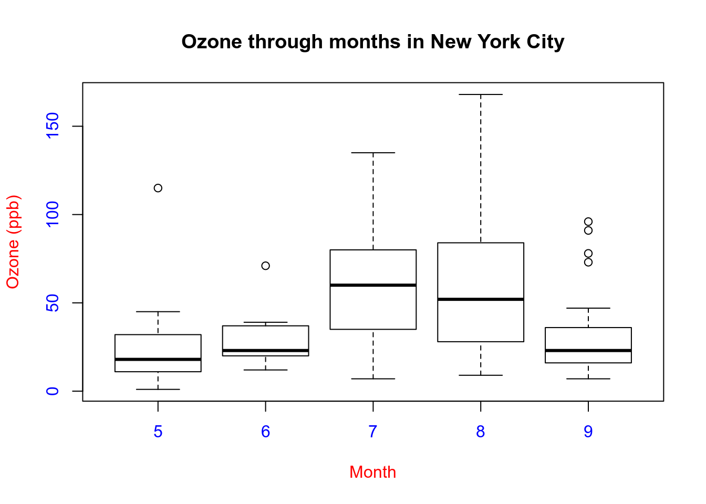

Exploratory Data Analysis Course - Module 1
- 1 Introduction.
- 2 Principles of Analytic Graphics.
- 2.1 First principle: show comparisons.
- 2.2 Second principle: show causality, mechanism, explanation, systematic structure.
- 2.3 Third principle: show multivariate data.
- 2.4 Fourth principle: integrate evidence.
- 2.5 Fifth principle: describe and document the evidence.
- 2.6 Sixth principle: content, content, content.
- 3 Exploratory graphs.
- 3.1 Characteristics of exploratory graphs.
- 3.2 Case study: air pollution in the United States of North America. A key question.
- 3.3 Loading the data.
- 3.4 Back to the question.
- 3.5 Further resources.
- 4 R plotting systems, a generic preview.
- 5 Graphics devices.
- 5.1 List of graphical devices in R (screen device and file devices).
- 5.2 The process of making a plot.
- 5.3 How does a plot get created?
- 5.4 Graphics file devices:
vectorandbitmapdevices. - 5.5 Multiple open graphics devices,
checking and setting the current device:
dev.curr(),dev.set(). - 5.6 Copying plots to another device:
dev.copy(),dev.copy2pdf(),dev.off().
- 6 The base plotting system.
- 7 Session Info.
1 Introduction.
The purpose of this course is to look at our tidy data and get a sense of what’s happening, what are the kinds of plots that we want to make (we’ll see the basic principles about making analytic graphics, which is one of the ways we can explore data).
In other words, we’ll explore our data without having a precise or specific model about, in order to know what’s supposed to be going on before we do modelling, before we do prediction, before we do any sort of inference.
Exploratory data analysis (EDA) is what occurs in the “editing room” of a research project or any data-based investigation. It is the process of making the “rough cut” for a data analysis, the purpose of which is very similar to that in the film editing room.
The goals of EDA are many, but they include:
- Identifying relationships between variables that are
particularly interesting or unexpected.
- Checking to see if there is any evidence for or against a
stated hypothesis.
- Checking for problems with the collected data, such as
missing data or measurement error, or identifying certain areas where
more data need to be collected.
- Finer details of presentation of the data and evidence, important for the final product, are not necessarily the focus.
EDA is important because it allows the investigator to make critical decisions about what is interesting to follow up on and what probably isn’t worth pursuing because the data just don’t provide the evidence (and might never provide the evidence, even with follow up).
In few words, the goal of EDA is to:
- show the data,
- summarize the evidence, and
- identify interesting patterns while eliminating ideas that likely won’t pan out.
2 Principles of Analytic Graphics.
Edward Tufte, in his Beautiful Evidence, Graphics Press LLC, discusses how to make informative and useful data graphics and lays out six principles that are important to achieving that goal:
- Show comparisons.
- Show causality, mechanism, explanation, systematic structure.
- Show multivariate data.
- Integrate evidence.
- Describe and document the evidence.
- Content, content, content.
2.1 First principle: show comparisons.
Showing comparisons is really the basis of all good scientific investigation.
- Evidence for a hypothesis is always relative to another
competing hypothesis.
- A good scientist is always asking “Compared to What?” when
confronted with a scientific claim or statement.
- Data graphics should generally follow this same principle: should always be comparing at least two things.
We’ll hear more about this when we study statistical inference: evidence for a hypothesis is always relative to another competing or alternative hipothesis.
Typical example of this, are graphics showing data of both treatment and control groups in which the experiment was divided.
- The first boxplot shows the relationship between the
use of an air cleaner and the number of
symptom-free days of asthmatic children.
- Since the box is above 0, the number of symptom-free days for
children with asthma is bigger using the air cleaner.
- While it’s somewhat informative, it’s also somewhat
cryptic, since the y-axis* is claiming to show a
change in number of symptom-free days. Wouldn’t it be
better to show a comparison**?
- So the second graphic shows two boxplots, the one
on the left showing the results for a control group
that doesn’t use an air cleaner alongside the previously shown
boxplot.
- This way, we can clearly see that using the air cleaner increases the number of symptom-free days for most asthmatic children. The plot on the right (using the air cleaner) is generally higher than the one on the left (the control group).
2.2 Second principle: show causality, mechanism, explanation, systematic structure.
Generally, it’s difficult to prove that one thing causes another thing even with the most carefully collected data.
But it’s still often useful for our data graphics to:
- indicate what we are thinking about in terms of
cause;
- show causality or a mechanism of how our
theory of the data works (what we believe and how we believe
the world works);
- in summary, to show our causal framework for thinking about the question we are trying to answer.
Such a display may suggest hypotheses or refute them, but most importantly, they will raise new questions that can be followed up with new data or analyses.
Turning back to the air-cleaner example:
- This plot shows the dual boxplot we previously showed, but
next to it we have a corresponding plot of
changes in measures of particulate
matter.
- By showing the two sets of boxplots side by side we’re
explaining our theory of why the
air cleaner increases the number of
symptom-free days.
- The hypothesis behind air cleaners improving asthma
morbidity in children is that the air cleaners remove airborne
particles from the air.
- And in fact we can see from the right-hand plot that on average in
the control group, the level of particles actually increased a little
bit while in the air cleaner
group the levels decreased on average.
- This pattern shown in the plot is consistent with
the idea that air cleaners improve health by reducing airborne
particles.
- However, it is not conclusive proof of this idea because there may be other unmeasured confounding factors that can lower levels of particles and improve symptom-free days.
2.3 Third principle: show multivariate data.
The real world is multivariate. For anything that we might study, there are usually many attributes that we can measure.
The point is that data graphics should attempt to show this information as much as possible, rather than reduce things down to one or two features that we can plot on a page.
Let’s see an example where restricting ourselves to two variables leads us to an incorrect conclusion.
- This plot shows the relationship between air
pollution (x-axis) and mortality rates among the elderly
(y-axis).
- The blue regression line shows a surprising
result: as pollution increases
fewer people die.
- We’ll learn about regression lines when we take the Regression Models course.
Something has to be wrong. In fact, this is an example of Simpson’s paradox, or the Yule–Simpson effect.
- Wikipedia tells us that this “is a paradox in probability and statistics, in which a trend that appears in different groups of data disappears when these groups are combined”.
Now we can see that, in each of the plots above, the relationship is no more slightly positive but instead slightly negative, that is to say, as pollution increases more people die in all seasons.
2.4 Fourth principle: integrate evidence.
Data graphics should make use of many modes of data presentation simultaneously, not just the ones that are familiar to us or that the software can handle.
This means not limiting ourselves to one form of expression.
- We can use words, numbers, images as well as diagrams.
One should never let the tools available drive the analysis.
- One should integrate as much evidence on to a graphic as possible.
Example:
- This figure, taken from a paper published in the Journal of the AMA,
shows the relationship between pollution and
hospitalization of people with heart disease.
- The solid circles in the center portion indicate
point estimates of percentage changes in
hospitalization rates for different levels of pollution.
- The lines through the circles indicate confidence
intervals associated with these estimates (we’ll learn more
about confidence intervals in te statistical inference course).
- Then, on the right side of the figure there’s another
column of numbers, one for each of the point estimates given.
This column shows posterior probabilities that relative
risk is greater than 0. This, in effect, is a measure of the strength of
the evidence showing the correlation between pollution and
hospitalization.
- The point here is that all of this information is located in one picture so that the reader can see the strength of not only the correlations but the evidence as well.
2.5 Fifth principle: describe and document the evidence.
Data graphics should be appropriately documented with labels, scales and sources.
A general rule about data graphics regards it’s credibility, that is to say, a data graphic should tell a complete story all by itself.
- We should not have to refer to extra text or descriptions when interpreting a plot, if possible.
We might think that this level of documentation should be reserved for “final” plots as opposed to exploratory ones, but it’s good to get in the habit of documenting your evidence sooner rather than later.
2.6 Sixth principle: content, content, content.
Analytical presentations ultimately stand or fall depending on the quality, relevance, and integrity of their content.
- This includes the question being asked and the evidence presented in favor of certain hypotheses.
No amount of visualization magic or bells and whistles can make poor data, or more importantly, a poorly formed question, shine with clarity.
Starting with a good question, developing a sound approach, and only presenting information that is necessary for answering that question, is essential to every data graphic.
3 Exploratory graphs.
Visualizing the data via graphics can be important at the beginning stages of data analysis to:
- Understand basic properties of the data.
- Find simple patterns in data.
- Suggest possible modeling strategies.
In later stages of an analysis, graphics can be used to:
- “Debug” an analysis, if an unexpected (but not necessarily
wrong) result occurs.
- Ultimately, to communicate our findings to others.
3.1 Characteristics of exploratory graphs.
We will make a distinction between exploratory graphs and final graphs.
This distinction serves to highlight the fact that graphs are used for many different purposes.
Exploratory graphs are usually made very quickly and a lot of them are made in the process of checking out the data.
The goal of making exploratory graphs is usually developing a personal understanding of the data and to prioritize tasks for follow up.
Exploratory plots let us summarize the data and highlight any broad features.Details like axis orientation or legends, while present, are generally cleaned up and prettified if the graph is going to be used for communication later.
Often color and plot symbol size are used to convey various dimensions of information.
3.2 Case study: air pollution in the United States of North America. A key question.
We will use a simple case study to demonstrate the kinds of simple graphs that can be useful in exploratory analyses.
The data we will be using come from the U.S. Environmental Protection Agency (EPA), which is the U.S. government agency that sets national air quality standards for outdoor air pollution.
One of the national ambient air quality standards concerns the long-term average level of fine particle pollution, also referred to as PM2.5 that stands for particle matter less than or equal to 2.5 microns in aerodynamic diameter.
- The standard says that the annual mean, averaged over 3 years cannot exceed 12 micrograms per cubic meter.
Data on daily PM2.5 are available from the U.S. EPA web site, or specifically, the EPA Air Quality System web site.
One key question we are interested is:
Are there any counties in the U.S. that exceed the national standard for fine particle pollution?
This question has important consequences because counties that are found to be in violation of the national standards can face serious legal consequences.
- In particular, states that have counties in violation of the standards are required to create a State Implementation Plan (SIP) that shows how those counties will come within the national standards within a given period of time.
3.3 Loading the data.
We’ve already downloaded the avgpm25.csv file.
- This dataset contains the annual mean PM2.5 averaged over the period 2008 through 2010.
library(dplyr)
class <- c("numeric", "character", "factor", "numeric", "numeric")
pollution <- read.csv("4_data/avgpm25.csv", colClasses = class)
pollution <- as_tibble(pollution)
pollution
# A tibble: 576 × 5
pm25 fips region longitude latitude
<dbl> <chr> <fct> <dbl> <dbl>
1 9.77 01003 east -87.7 30.6
2 9.99 01027 east -85.8 33.3
3 10.7 01033 east -87.7 34.7
4 11.3 01049 east -85.8 34.5
5 12.1 01055 east -86.0 34.0
6 10.8 01069 east -85.4 31.2
7 11.6 01073 east -86.8 33.5
8 11.3 01089 east -86.6 34.7
9 9.41 01097 east -88.1 30.7
10 11.4 01103 east -86.9 34.5
# … with 566 more rows- Each row contains:
- the average
pm25level;
- the 5-digit
fipscode indicating the county (the first two digits indicate the state and the other three digits indicates the county);
- the
regionof the country in which the county resides;
- the
longitudeandlatitudeof the area.
- the average
3.4 Back to the question.
How can we see if any counties exceed the standard of 12 micrograms per cubic meter?
3.4.1 Simple summaries: one dimension.
For one dimensional summarize, there are number of options in R.
- Five-number summary:
fivenum(),quantile()andsummary().- This gives the minimum, 25th percentile, median, 75th percentile,
maximum of the data and is a quick check on the distribution of the
data.
- This gives the minimum, 25th percentile, median, 75th percentile,
maximum of the data and is a quick check on the distribution of the
data.
- Boxplots:
boxplot().- Boxplots are a visual representation of the five-number
summary plus a bit more information.
- In particular, boxplots commonly plot outliers that go
beyond the bulk of the data.
- Boxplots are a visual representation of the five-number
summary plus a bit more information.
- Barplot:
barplot().- Barplots are useful for visualizing categorical data, with
the number of entries for each category being proportional to the height
of the bar.
- Think “pie chart” but actually useful.
- Barplots are useful for visualizing categorical data, with
the number of entries for each category being proportional to the height
of the bar.
- Histograms:
hist()andrug().- Histograms show the complete empirical distribution of the
data, beyond the five data points shown by the boxplots.
- Here, you can easily check skewness (sesgadez) of the data,
symmetry, multi-modality and other features.
- Histograms show the complete empirical distribution of the
data, beyond the five data points shown by the boxplots.
- Density plot:
density().- This function computes a non-parametric estimate of the distribution of a variable.
3.4.1.1 Five number
summaries: fivenum(), quantile() and
summary().
str(fivenum)
function (x, na.rm = TRUE) This function takes a vector of numbers as input and, as we said, it gives the minimum, 25th percentile, median, 75th percentile, maximum of the data.
fivenum(pollution$pm25)
[1] 3.382626 8.547590 10.046697 11.356829 18.440731
quantile(pollution$pm25)
0% 25% 50% 75% 100%
3.382626 8.548799 10.046697 11.356012 18.440731 For interactive work, it’s often a bit nice
to use the summary() function, which has a default
method for numeric vectors.
- In addition to the five-number summary, the
summary()function also gives the mean of the data, which can be compared to the median to identify any skewness in the data.
summary(pollution$pm25)
Min. 1st Qu. Median Mean 3rd Qu. Max.
3.383 8.549 10.047 9.836 11.356 18.441 - Given that the mean is fairly close to the median, there doesn’t appear to be a dramatic amount of skewness in the distribution of PM2.5 in this dataset.
3.4.1.2 Boxplot:
boxplot().
The boxplot shows us the same quartile data that
summary, quantile and fivenum
did.
- The lower and upper edges of the box respectively
show the values of the
25thand75thquantiles.
- The horizontal line inside the box represents the
median.
- The height of the box is the inter-quartile
range (IQR), the difference between the
25thand75thquantiles.
- Boxplot has a
rangeparameter, which default value is 1.5.
- The “whiskers” (bigotes) that stick out above and
below the box relate to the range parameter of boxplot. They have a
length of 1.5 times the IQR (that is to say, the
whiskers are drawn to be a length of
range x IQR).- This shows us roughly how many, if any, data points are
outliers, that is, beyond this range of values.
- Outliers are plotted separately as an individual points.
- This shows us roughly how many, if any, data points are
outliers, that is, beyond this range of values.
boxplot(pollution$pm25, col = "cornflowerblue")- We can see that there are a few points on both the high and the low
end that appear to be outliers.
- It appears that the high points are all
above the level of 15, so we can take a look at
those data points directly.
- Note that although the current national ambient air quality standard
is 12 micrograms per cubic meter, it used to be 15.
- Note that although the current national ambient air quality standard
is 12 micrograms per cubic meter, it used to be 15.
- An unnecessary detail at this stage: we can see a complete
list of 657 available colors in R, by typing
colors().
filter(pollution, pm25 > 15)
# A tibble: 8 × 5
pm25 fips region longitude latitude
<dbl> <chr> <fct> <dbl> <dbl>
1 16.2 06019 west -120. 36.6
2 15.8 06029 west -119. 35.3
3 18.4 06031 west -120. 36.2
4 16.7 06037 west -118. 34.1
5 15.0 06047 west -121. 37.2
6 17.4 06065 west -117. 33.8
7 16.3 06099 west -121. 37.6
8 16.2 06107 west -119. 36.2- These counties are all in the western U.S. and in
fact are all in California because the first two digits
of the
fipscode are06.
3.4.1.2.1 A quick
map() from maps package.
Because we have longitudes and latitudes,
ee can make a quick map of these counties to get a sense of where they
are in California.
library(maps)
Attaching package: 'maps'
The following object is masked from 'package:plyr':
ozone
map("county", "california")
with(filter(pollution, pm25 > 15), points(longitude, latitude))At this point, we might decide to follow up on these counties, or ignore them if we are interested in other features.
Since these counties appear to have very high levels, relative to the distribution of levels in the other counties in the U.S., they may be worth following up on if we are interested in describing counties that are potentially in violation of the standards.
Notice that the plot/map above is not very pretty, but it was made quickly and it gave us a sense of where these outlying counties were located and conveyed enough information to help decide if we are willing to follow up or not.
3.4.1.3 Histogram:
hist() and rug().
A histogram is useful to look at when we want to see more detail on the full distribution of the data.
- The boxplot is quick and handy, but fundamentally only
gives us a bit of information.
- Specifically, how many entries (counties in our example) fall into each bucket of measurments.
hist(pollution$pm25, col = "green")- The distribution shows a high concentration of counties in the neighborhood of 9 to 12 micrograms per cubic meter.
We can get a little more detail if we use the
rug() function to show us (through density of tick
marks):
- how many data points are in each bucket,
and
- where they lie within the bucket.
hist(pollution$pm25, col = "green")
rug(pollution$pm25)- The large cluster of data points in the 9 to 12 range is perhaps not surprising in this context.
3.4.1.3.1 The
hist() default algorithm and it’s breaks
argument.
The hist() function has a default algorithm for
determining the number of bars to use in the histogram
based on the density of the data.
- See
?nclass.Sturges
However, we can override the default option by
setting the breaks argument to the number of
buckets to split the data into.
- Let’s use more bars to try to get more detail.
hist(pollution$pm25, col = "green", breaks = 100)
rug(pollution$pm25)Now we see that there’s a rather large spike at 9 micrograms per cubic meter.
This histogram with more buckets is not nearly as smooth as the preceding one. In fact, it’s a little too noisy to see the distribution clearly.
- When we’re plotting histograms we might have to experiment
with
breaksto get a good idea of our data’s distribution.
- When we’re plotting histograms we might have to experiment
with
Notice how
rug()automatically adjusted its pocket size to that of the last plot plotted.
3.4.1.4 Overlaying
features: abline().
Once we start seeing interesting features in our data, it’s often useful to lay down annotations on our plots as reference points or markers.
For example in our boxplot above, we might want to draw a horizontal line at 12 where the national standard is.
boxplot(pollution$pm25, col = "cornflowerblue")
abline(h = 12)- We can see that a reasonable portion of the distribution as displayed by the boxplot is above the line (i.e. potentially in violation of the standard).
While the boxplot gives a sense, the histogram might be better suited to visualizing the data here. Let’s draw two lines, one at the median of the data and one at 12, the level of the legal standard.
hist(pollution$pm25, col = "green")
abline(v = 12, lwd = 2)
abline(v = median(pollution$pm25), col = "magenta", lwd = 4)- Notice that for the vertical lines, we can use both
color (
col) and line width (lwd) to indicate different components of information.
3.4.1.5 Barplot:
barplot().
As we said, the barplot is useful for summarizing categorical data.
Here we have one categorical variable, the
region in which a county resides (east or west).
- We can see how many western and eastern counties there are with
barplot().
- We use the
table()function to do the actual tabulation of how many counties there are in each region.
table(pollution$region) %>% barplot(col = "wheat")- We can see quite clearly that there are many more counties in the eastern U.S. in this dataset than in the western U.S.
3.4.2 Simple summaries: two dimensions and beyond.
For investigating data in two dimensions and beyond, there is an array of additional tools.
Some of the key approaches in two dimensions are:
- Multiple or overlayed 1-D plots:
Lattice,ggplot2.- Using multiple boxplots or multiple histograms can
be useful for seeing the relationship between two variables, especially
when one is naturally categorical.
- Using multiple boxplots or multiple histograms can
be useful for seeing the relationship between two variables, especially
when one is naturally categorical.
- Scatterplots.
- Scatterplots are the natural tool for visualizing two
continuous variables.
- Transformations of the variables (e.g. log or square-root
transformation) may be necessary for effective visualization.
- Scatterplots are the natural tool for visualizing two
continuous variables.
- Smooth scatterplots.
- Similar in concept to scatterplots but rather plots a 2-D
histogram of the data.
- Can be useful for scatterplots that may contain many many data points.
- Similar in concept to scatterplots but rather plots a 2-D
histogram of the data.
For visualizing data in more than 2 dimensions, without resorting to 3-D animations, we can often combine the tools that we’ve already learned:
- Overlayed or multiple 2-D plots,
conditioning plots (
coplots).- A conditioning plot, or coplot, shows the relationship between
two variables as a third (or more) variable changes.
- For example, we might want to see how the relationship between air
pollution levels and mortality changes with the season of the year.
Here, air pollution and mortality are the two primary variables and
season is the third variable varying in the background.
- A conditioning plot, or coplot, shows the relationship between
two variables as a third (or more) variable changes.
- Use color, size, shape to add dimensions.
- Plotting points with different colors or shapes is useful for
indicating a third dimension, where different colors
can indicate different categories or ranges of something.
- Plotting symbols with different sizes can also achieve the same
effect when the third dimension is continuous.
- Plotting points with different colors or shapes is useful for
indicating a third dimension, where different colors
can indicate different categories or ranges of something.
- Spinning/interactive plots.
- Spinning plots can be used to simulate 3-D plots by
allowing the user to essentially quickly cycle through many different
2-D projections so that the plot feels 3-D.
- These are sometimes helpful to capture unusual structure in the
data, but rarely used.
- Spinning plots can be used to simulate 3-D plots by
allowing the user to essentially quickly cycle through many different
2-D projections so that the plot feels 3-D.
- Actual 3-D plots (not that useful).
- Actual 3-D plots (for example, requiring 3-D glasses) are relatively
few and far between and are generally impractical for communicating to a
large audience.
- Of course, this may change in the future with improvements in technology.
- Actual 3-D plots (for example, requiring 3-D glasses) are relatively
few and far between and are generally impractical for communicating to a
large audience.
3.4.2.1 Multiple Boxplots.
One of the simplest ways to show the relationship between two variables (in this case, one categorical and one continuous) is to show side-by-side boxplots.
The boxplot() function can take a
formula:
The left hand side indicates the variable for which we want to create the boxplot, a continuous variable.
The right hand side indicates the variable that stratifies the left hand side into categories.
We use the R formula
y ~ xto show thatydepends onx.
Using the pollution dataset, we can show the difference in pm2.5
levels between the eastern and western parts of
the U.S. with the boxplot() function.
boxplot(pm25 ~ region, data = pollution, col = "red")Two for the price of one!
Since the
regionvariable only has two categories, we end up with two boxplots.We can see rather clearly that the levels in eastern counties are on average higher than the levels in western counties.
In general, side-by-side boxplots are useful because we can often fit many on a page to get a rich sense of any trends or changes in a variable.
- Their compact format allow you to visualize a lot of data in a small space.
3.4.2.2 Multiple Histograms.
Similarly we can plot multiple histograms in one plot, though to do this we have to use more than one R command.
It can sometimes be useful to plot multiple histograms to see changes in the shape of the distribution of a variable across different categories, much like boxplot.
- However, the number of histograms that we can effectively put on a page is limited.
Here is the distribution of pm2.5 in the eastern and western regions of the U.S.
- First we have to set up the plot window with the
par()command, which specifies how we want to lay out the plots.- We want one plot above the other, so we set up the plot window for
two rows and one column with the
mfrowargument.
- And we also use par to specify margins, by assigning to it’s
marargument, a 4-long vector which indicates the number of lines for the bottom, left, top and right.
- We want one plot above the other, so we set up the plot window for
two rows and one column with the
- Then, we’ll use
subset()to pull off the data we want to plot.
par(mfrow = c(2, 1), mar = c(4, 4, 2, 1))
hist(subset(pollution, region == "east")$pm25, col = "green")
hist(subset(pollution, region == "west")$pm25, col = "green")- We can see that the pm2.5 in the western U.S. tends to be
right-skewed (sesgado a la derecha) with some outlying
counties with very high levels.
- The pm2.5 in the east tends to be left-skewed (sesgado a la izquierda), some counties having very low levels.
3.4.2.3 Scatterplots,
using plot() within with() command.
As we said, for continuous variables, the most common visualization technique is the scatterplot, which simply maps each variable to an x- or y-axis coordinate.
Let’s do a scatterplot of latitude and
pm2.5, which can be made with the plot()
function.
More in particular, we’ll call plot() from
inside the with()command.
with()evaluates “an R expression in an environment constructed from data”.We’ll use
pollutionas the first argument towith()and the call toplot()as the second.This allows us to avoid typing
pollution$before the arguments toplot(), so it saves us some typing and adds to our base of R knowledge.
with(pollution, plot(latitude, pm25))
abline(h = 12, lwd = 2, lty = 2)- As we go from south to north in the U.S., we can see that the
highest levels of
pm2.5tend to be in the middle region of the country.
3.4.2.3.1 Scatterplot using color.
If we wanted to add a third dimension to the
scatterplot above, say the region variable indicating east
and west, we could use color to highlight that dimension.
Here we color the circles in the plot to indicate
east (black) or west
(red).
with(pollution, plot(latitude, pm25, col = region))
abline(h = 12, lwd = 2, lty = 2)
levels(pollution$region)
[1] "east" "west"- It may be confusing at first to figure out which color gets mapped
to which region. We can find out by looking directly at the
levelsof the region variable.
- We see that the first level is “east” and the second
level is “west”. So the color for “east” will get mapped to
1 and the color for “west” will get mapped to 2.
- For plotting functions:
col = 1is black (the default color),
col = 2is red.
3.4.2.3.2 Multiple scatterplots or panel plots.
Using multiple scatterplots can be necessary when overlaying points with different colors or shapes is confusing (sometimes because of the volume of data).
Separating the plots out can sometimes make visualization easier.
par(mfrow = c(1, 2), mar = c(5, 4, 2, 1))
with(subset(pollution, region == "west"), plot(latitude, pm25, main = "West"))
with(subset(pollution, region == "east"), plot(latitude, pm25, main = "East"))
These kinds of plots are generally easier to make
with either the lattice or ggplot2 system,
which we will learn about in greater detail later.
## Lattice.
library(lattice)
xyplot(pm25 ~ latitude | region, data = pollution)
## ggplot2.
library(ggplot2)
qplot(latitude, pm25, data = pollution, facets = . ~ region)3.5 Further resources.
- R Graph Gallery
- This is collection of charts made with the R programming
language.
- Hundreds of charts are displayed in several sections, always with
their reproducible code available.
- The gallery makes a focus on the
tidyverseandggplot2.
- This is collection of charts made with the R programming
language.
- R Bloggers
4 R plotting systems, a generic preview.
There are three different plotting systems in R and they each have different characteristics and modes of operation.
- The base plotting system, the lattice system and the ggplot2 system.
4.1 The base plotting system or “artist’s pallete” model.
The base plotting system is the original plotting system for R, sometimes referred to as the “artist’s palette” model.
The core plotting and graphics engine in R is encapsulated in the following packages:
graphics:- contains plotting functions like
plot(),hist(),boxplot()and many others.
- contains plotting functions like
grDevices:- contains all the code implementing the various graphics devices (we’ll see this in more detail later).
The main idea of this system is to start with blank canvas and build up from there:
In more R-specific terms, we typically start with
plot()function (or similar plot creating function) to initiate a plot.And then, annotate the plot with various annotation functions:
text,lines,points,axis.
The base plotting system mirrors how we sometimes think of building plots and analyzing data.
For example, we might look at a simple scatterplot and then decide to add a linear regression line or a smoother to it to highlight the trends.
data(airquality)
with(airquality, {
plot(Temp, Ozone)
lines(loess.smooth(Temp, Ozone))
})- The
plot()function creates the initial plot and draws the points (circles) on the canvas.
- The
lines()function is used to annotate or add to the plot; in this case it adds a loess smoother to the scatterplot.- Loess is a short for Local Regression, and it’s the most common method used to smoothen a volatile time series (a non-parametric method where least squares regression is performed in localized subsets, which makes it a suitable candidate for smoothing any numerical vector).
Another example:
data(cars)
## Create the plot / draw canvas.
with(cars, plot(speed, dist))
## Add annotation.
title("Speed vs. Stopping distance")4.1.1 Downsides.
One downside with constructing base plots is that we can’t go backwards once the plot has started.
So it’s possible that we could start down the road of constructing a plot and realize later that we don’t have enough room to add a y-axis label or readjust margins or fix a misspelled caption, etc.
There is then a need to plan in advance to make sure, for example, that we’ve set our margins to be the right size to fit all of the annotations that we may want to include.
Another downside is that it’s difficult to describe or translate a plot to others because there’s no clear graphical language or grammar that can be used to communicate what we’ve done.
The only real way to describe what we’ve done in a base plot is to just list the series of commands/functions that we’ve executed.
So a finished plot will be a series of R commands and that’s difficult to translate into a different system.
4.2 The lattice system.
The lattice plotting system is implemented using the following packages:
latticepackage: contains code for producing Trellis graphics, which are independent of thebasegraphics system.- Includes functions like
xyplot(),bwplot(),levelplot().
- Includes functions like
gridpackage: implements a different graphic system independent of thebasesystem.- The
latticepackage builts on top ofgrid.
- We seldom call functions from the
gridpackage directly.
- The
library(lattice)With this system, plots are created with a single function
call, such as xyplot() or
bwplot().
There is no real distinction between functions that create or initiate plots and functions that annotate plots because it all happens at once.
One consecuence of this feature that further differentiates lattice from base plotting is that things like margins and spacing are set automatically. In fact this is possible because entire plot is specified at once via a single function call, so all of the available information needed to figure out the spacing and margins is already there.
Lattice plots tend to be most useful for
conditioning types of plots, i.e. looking at how
y changes with x across levels of
z.
- The variable
zmight be a categorical variable of our data.
This system is also good for putting many plots on a screen at once.
- It allows us to squeeze a lot of information into a single window or page, looking at multi-dimensional data in a glance.
Example of a lattice plot that looks at the
relationship between life expectancy and
income and how that relationship varies by
region in the United States.
- We’ll use the R formula
Life.Exp ~ Income | region, which indicates we’re plotting life expectancy as it depends on income for each region.
state <- data.frame(state.x77, region = state.region)
xyplot(Life.Exp ~ Income | region, data = state, layout = c(4, 1))
xyplot(Life.Exp ~ Income | region, data = state, layout = c(2, 2))We can see that the entire plot was generated by the call to
xyplot()and all of the data for the plot were stored in the state data frame.The plot itself contains four panels —one for each region— and within each panel is a scatterplot of life expectancy and income.
The notion of panels comes up a lot with lattice plots because we typically have many panels, each panel typically representing a condition like
region.
4.2.1 Downsides.
One downside with the lattice system is that it can sometimes be very awkward to specify an entire plot in a single function call.
- We end up with functions with many many arguments in those cases.
Also, annotation in panels in plots is not especially intuitive and can be difficult to explain.
- In particular, the use of custom panel functions and subscripts can be difficult to wield and requires intense preparation.
Finally, once a plot is created, we cannot “add” to the plot (but of course we can just make it again with modifications).
4.3 The ggplot2 system.
The ggplot2 plotting system attempts to split the
difference between base and lattice
in a number of ways.
- It automatically deals with spacings, text, titles
(as
latticedoes) but also allows us to annotate by “adding” to a plot (asbasedoes).
- It’s the best of both worlds.
library(ggplot2)Superficially, the ggplot2 functions are
similar to lattice, but the system is
generally easier and more intuitive to use.
The defaults used in ggplot2 make many choices for us, but we can still customize plots to our heart’s desire.
The package is based on a “grammar of graphics” (hence
the gg in the name), so we can control
the aesthetics of our plots.
Let’s see an example now with a simple (single) command.
data(mpg)
qplot(displ, hwy, data = mpg)The
qplot()function in ggplot2 is what we use to “quickly get some data on the screen”.There are additional functions in ggplot2 that allow you to make arbitrarily sophisticated plots.
4.4 References.
- Paul Murrell (2011), R Graphics, CRC Press.
- Hadley Wickham (2009), ggplot2, Springer.
- Deepayan Sarkar (2008), Lattice: Multivariate Data Visualization with R, Springer.
5 Graphics devices.
A graphics device is something where we can make a plot appear. Examples include:
- A window on your computer (screen device).
- A PDF file (file device).
- A PNG or JPEG file (file device).
- A scalable vector graphics (SVG) file (file device).
5.1 List of graphical devices in R (screen device and file devices).
The help command ?Devices gives us the list of devices
supported by our installation of R.
Graphical devices’ R documentation
The code for most of the key graphics devices is implemented in the
grDevicespackage, which comes with a standard R installation and is typically loaded by default.There are also graphics devices that have been created by users and these are aviailable through packages on CRAN.
The most common place for a plot to be “sent” is the screen device.
- On Unix/Linux the screen device is launched with
x11()function.
- On a Mac the screen device is launched with the
quartz()function.
- On Windows the screen device is launched with
windows()function.
For quick visualizations and exploratory analysis, usually you want to use the screen device.
- Functions like
plot()in base,xyplot()in lattice, orqplot()in ggplot2 will default to sending a plot to the screen device.
For plots that may be printed out or be incorporated into a document (such as papers, reports or slide presentations), usually a file device is more appropriate.
- There are many different file devices to choose from and exactly which one to use in a given situation is something we discuss later.
5.2 The process of making a plot.
When making a plot one must first make a few considerations (not necessarily in this order):
- Where will the plot be made? On the screen or in a
file?
- How will the plot be used?
- Is the plot for viewing temporarily on the screen?
- Will it be presented in a web browser?
- Will it eventually end up in a paper that might be printed?
- Are you using it in a presentation?
- Is there a large amount of data going into the plot? Or is it just a few points?
- Do you need to be able to dynamically resize the graphic?
- What graphics system will you use:
base,latticeorggplot2?- These generally cannot be mixed.
Base graphics are usually constructed
piecemeal (por partes):
- Each aspect of the plot is handled separately through a series
of function calls.
- This is sometimes conceptually simpler and allows plotting to mirror the thought process.
Lattice graphics are usually created in a single
function call:
- All of the graphics parameters have to be specified at
once.
- Specifying everything at once allows R to automatically calculate the necessary spacings and font sizes.
The ggplot2 system combines concepts
from both base and lattice graphics but uses
an independent implementation.
5.3 How does a plot get created?
There are two basic approaches to plotting.
5.3.1 Screen device approach.
The first and most common approach involves:
Call a plotting function like
plot(),xyplot()orqplot().The plot appears on the screen device.
Annotate the plot if necessary.
Enjoy.
Here’s an example of this process in making a plot
with the plot() function.
## Make plot appear on screen device.
with(faithful, plot(eruptions, waiting))
## Annotte with a title.
title(main = "Old Faithful Geyser data")5.3.2 File devices approach.
The second basic approach to plotting is most commonly used for file devices:
Explicitly launch a graphics device.
Call a plotting function to make a plot (notice: if we are using a file device, no plot will appear on the screen).
Annotate the plot if necessary.
Explicitly close graphics device with
dev.off()(this is very important!).
Here’s an example of how to make a plot that gets saved in a PDF file.
## Open PDF device; create 'myplot.pdf' in my data working directory.
pdf(file = "4_data/myplot.pdf")
## Create plot and send to a file (no plot appears on the screen).
with(faithful, plot(eruptions, waiting))
## Annotate plot; still nothing on screen.
title(main = "Old Faithful Geyser data")
## Close the PDF file device.
dev.cur()
pdf
3
dev.off()
png
2
dev.cur()
png
2 5.4 Graphics file
devices: vector and bitmap devices.
There are two basic types of file devices
to consider: vector and bitmap devices.
Vectorformats are good for line drawings and plots with solid colors using a modest number of points.Bitmapformats are good for plots with a large number of points, natural scenes or web-based plots.
Some of the key vector formats are:
pdf:- useful for line-type graphics, resizes well, usually
portable;
- not efficient if a plot has many objects/points.
- useful for line-type graphics, resizes well, usually
portable;
svg:- XML-based scalable vector graphics;
- supports animation and interactivity;
- potentially useful for web-based plots.
- XML-based scalable vector graphics;
win.metafile:- Windows metafile format (only on Windows).
- Windows metafile format (only on Windows).
postscript:- older format, also resizes well, usually portable;
- can be used to create encapsulated postscript files;
- Windows systems often don’t have a postscript viewer.
- older format, also resizes well, usually portable;
Some examples of bitmap formats are:
png:- stands for Portable Network Graphics, good for line
drawings or images with solid colors;
- uses lossless compression (like the old GIF format);
- most web browsers can read this format
natively;
- good for plotting many many many points;
- does not resize well.
- stands for Portable Network Graphics, good for line
drawings or images with solid colors;
jpeg:- good for photographs or natural scenes;
- not great for line drawings;
- uses lossy compression;
- can be read by almost any computer and any web
browser;
- good for plotting many many many points.
tiff:- older lossless compression meta-format.
- older lossless compression meta-format.
bmp:- a native Windows bitmapped format.
5.5 Multiple open
graphics devices, checking and setting the current device:
dev.curr(), dev.set().
It is possible to open multiple graphics devices (screen, file, or both), for example when viewing multiple plots at once.
Plotting can only occur on one graphics device at a time, though.
Every open graphics device is assigned an integer starting with 2 (there’s no graphics device 1).
The currently active graphics device can be found by
calling dev.cur().
You can change the active graphics device with
dev.set(<integer>).
<integer>is the number associated with the graphics device you want to switch to.
5.6 Copying plots to
another device: dev.copy(), dev.copy2pdf(),
dev.off().
Copying a plot to another device can be useful because some plots require a lot of code and it can be a pain to type all that in again for a different device.
Notice that copying a plot is not an exact operation, so the result may not be identical to the original.
In particular, when copying from the screen device to a file, depending on the size of the file device, many annotations such as axis labels may not look right.
The dev.copy() command can be used to copy a plot
from one device to another.
The dev.copy2pdf() function is used
specifically to copy a plot from the current device
(usually the screen device) to a PDF file.
library(datasets)
## Create plot on screen device and add a main title.
with(faithful, plot(eruptions, waiting))
title(main = "Old Faithvul Geyser data")
## Copy my plot to a PNG file.
dev.copy(png, file = "4_data/geyserplot.png")
png
3
## Don't forget to close the PNG device!
dev.off()
png
2 6 The base plotting system.
As we saw, the core base plotting and graphics engine in R is encapsulated in the following packages:
- the
grDevicespackage, contains the functionality for sending plots to various output devices.
- the
graphicspackage, contains the code for actually constructing and annotating plots.
Now we’ll focus on using the base plotting system to create graphics on the screen device.
6.1 Again, the two phases involved in a base plot.
We know that creating a base plot involves two phases:
- Inizializing a new plot.
- Calling
plot(x, y)orhist()will:- launch a graphic device (if one is not already
open), and
- draw a new plot on the device.
- launch a graphic device (if one is not already
open), and
- If the arguments to
plot()orhist()are not of some special class, then the default method is called.
- Calling
- Annotating an existing plot.
- Annotation functions like
text(),abline(),points(), etc. to add or to modify an existing plot.
- Annotation functions like
Notice: most of the base plotting functions have many arguments, for example, setting the title, labels of axes, plot character, etc.
- some of the parameters can be set when we call the
function, or
- they can be added later in a separate function call.
6.2 Global parameters:
par().
The base graphics system has many global parameters that can set and tweaked.
These parameters are documented in ?par
and are used to control the global behavior of plots,
such as the margins, axis orientation and other
details.
- We can use
par()to set parameters OR to find out what values are already set.
To reset to the defaults: use dev.off()
or plot.new().
6.3 Simple base graphics.
6.3.1 Histogram:
hist().
If we run the following example and our graphics window is
not already open, it should open once we call the
hist() function.
library(datasets)
## We are interested in the Ozone variable.
range(airquality$Ozone)
[1] NA NA
## Draw a new plot on the screen device (a simple histogram to see
## the distribution of the measurements).
hist(airquality$Ozone)
6.3.2 Boxplot:
boxplot().
We already know that boxplot() takes as its first
argument a formula.
The formula has form of
y-axis ∼ x-axis.Anytime we see a
∼in R, it’s a formula.
For example, let’s plot the Ozone
levels in New York by Month:
- With the
table()command we can see that the data covers 5 months, May through September.
- We want a boxplot of
Ozoneas a function of theMonthin which the measurements were taken.- So we’ll use the R formula
Ozone ~ Monthas the first argument ofboxplot(). - We could first transform the
Monthvariable in to a factor before we use it in the right hand side of the formula. If we don’t,boxplot()will treat that variable as continuous (which in our example it makes no difference).
- So we’ll use the R formula
table(airquality$Month)
5 6 7 8 9
31 30 31 31 30
## airquality <- transform(airquality, Month = factor(Month))
boxplot(Ozone ~ Month, airquality,
xlab = "Month", ylab = "Ozone (ppb)",
col.axis = "blue", col.lab = "red",
main = "Ozone through months in New York City")
- Notice:
boxplot, unlikehist, does NOT specify atitleandaxis labelsfor us automatically.- We had to set all that by ourselves.
- We had to set all that by ourselves.
- The monthly boxplots show some interesting features.
- First, the levels of ozone tend to be highest in July
and August.
- Second, the variability of ozone is also highest in
July and August.
- This phenomenon is common with environmental data where the mean and the variance are often related to each other.
- First, the levels of ozone tend to be highest in July
and August.
6.3.3 Scatterplot:
plot().
Generally, the plot() function takes
two vectors of numbers:
- one for the x-axis coordinates, and
- one for the y-axis coordinates.
Here is a simple scatterplot made with the plot()
function.
with(airquality, plot(Wind, Ozone))
title(main = "Ozone and Wind in New York City")However, plot() is what’s called a
generic function in R, which means its behavior can
change depending on what kinds of data are passed to the function.
- We won’t go into detail about that behavior for now.
The type of plot to be drawn, can be specified
through the type argument to
plot(). Possible types are:
pfor points,
lfor lines,
bfor both,
cfor the lines part alone ofb,
ofor both ‘overplotted’,
hfor ‘histogram’ like (or ‘high-density’) vertical lines,
sfor stair steps,
Sfor other steps,
nfor no plotting.
We’ll focus on the default behavior of the
plot() function.
- Notice here that
plot()automatically creates labels for the x- and y-axis, from the names of the variables* (i.e.WindandOzone).- It doesn’t automatically create a title, though.
- It doesn’t automatically create a title, though.
- This can be useful when we are making plots quickly, but it demands that we have useful descriptive names for our variables and R objects.
6.4 Some important base
graphics parameters: continuing par() explanation.
Many base plotting functions share a set of global parameters.
length(par())
[1] 72
names(par())
[1] "xlog" "ylog" "adj" "ann" "ask" "bg"
[7] "bty" "cex" "cex.axis" "cex.lab" "cex.main" "cex.sub"
[13] "cin" "col" "col.axis" "col.lab" "col.main" "col.sub"
[19] "cra" "crt" "csi" "cxy" "din" "err"
[25] "family" "fg" "fig" "fin" "font" "font.axis"
[31] "font.lab" "font.main" "font.sub" "lab" "las" "lend"
[37] "lheight" "ljoin" "lmitre" "lty" "lwd" "mai"
[43] "mar" "mex" "mfcol" "mfg" "mfrow" "mgp"
[49] "mkh" "new" "oma" "omd" "omi" "page"
[55] "pch" "pin" "plt" "ps" "pty" "smo"
[61] "srt" "tck" "tcl" "usr" "xaxp" "xaxs"
[67] "xaxt" "xpd" "yaxp" "yaxs" "yaxt" "ylbias" There are a boatload (72) of parameters that
par() gives us access to.
Here are a few key ones:
pch:- the plotting character or plotting symbol
(default is open circle).
- the
pchShow()function gives all the symbol codes available.
- the plotting character or plotting symbol
(default is open circle).
lty:- the line type (default is solid line);
- can be dashed, dotted, etc.
lwd:- the line width, specified as an integer
multiple.
- the line width, specified as an integer
multiple.
col:- the plotting color, specified as a number,
string or hex code;
- the
colors()function gives us a vector of colors by name.
- the plotting color, specified as a number,
string or hex code;
xlab:- character string for the x-axis label.
- character string for the x-axis label.
ylab:- character string for the y-axis label.
The par() function is used to specify the global
graphics parameters that affect all plots in an R
session.
The following parameters can be overridden when they are specified as arguments to specific plotting functions:
las:- the orientation of the axis labels on the plot.
- the orientation of the axis labels on the plot.
bg,fg:- the background color and the foreground
color.
- the background color and the foreground
color.
mar:- the margin size.
- The various margin parameters, like
mar, are specified by setting a value for each side of the plot.
- Each number tells how many lines of text to leave at each
side.
- The numbers are assigned clockwise starting at the bottom.
- Side 1 is the bottom of the plot.
- Side 2 is the left hand side.
- Side 3 is the top.
- Side 4 is the right hand side.
- Side 1 is the bottom of the plot.
- The default for the inner margin is c(5.1, 4.1,
4.1, 2.1).
- the margin size.
oma:- the outer margin size.
- The default is 0 for all sides.
- the outer margin size.
mfrow:- number of plots per row, column (plots are filled
row-wise).
- number of plots per row, column (plots are filled
row-wise).
mfcol:- number of plots per row, column (plots are filled
column-wise).
- number of plots per row, column (plots are filled
column-wise).
pin:- plot dimensions in inches.
We can see the default values for global graphics
parameters by calling the par() function and
passing the name of the parameter in quotes.
- Alternatively, we can run the command with the
$syntax:par()$<parameter>
par("lty")
[1] "solid"
par()$col
[1] "black"
par("pch")
[1] 1
par()$bg
[1] "white"
par()$fg
[1] "black"
par("mar")
[1] 5.1 4.1 4.1 2.1
par("mfrow")
[1] 1 1
par()$pin
[1] 5.76 3.166.5 Base plotting
functions. Diving into plot() function.
The most basic base plotting function is
plot().
- It makes a scatterplot or other type of plot depending on the class of the object being plotted.
Calling plot() will draw a plot on the
screen device (and open the screen device if not already open).
After that, annotation functions can be called to add to the already-made plot.
6.5.1 Some key annotation functions.
lines():- add lines to a plot, given a vector of
xvalues and a corresponding vector ofyvalues (or a 2-column matrix);
- this function just connects the dots.
- add lines to a plot, given a vector of
points():- add points to a plot.
- add points to a plot.
text():- add text labels inside a plot using
specified
x, ycoordinates.
- add text labels inside a plot using
specified
legend():- add legends inside a plot, in an
x, yarbitrary position or in a position specified by a keyword (“bottomright”, “bottom”, “bottomleft”, “left”, “topleft”, “top”, “topright”, “right” and “center”).
- add legends inside a plot, in an
title():- add annotations outside a plot, to
x, yaxis labels, title, subtitle, outer margin.
- add annotations outside a plot, to
mtext():- add arbitrary text to the margins (inner or outer)
of the plot.
- This function is important for adding text annotations that aren’t
specific to a single plot in an arrange of multiple plots.
- add arbitrary text to the margins (inner or outer)
of the plot.
axis():- adding axis ticks/labels.
Here’s an example of creating a base plot and then
adding some annotation (a title, a text, a
legend).
library(datasets)
## Make the initial plot.
with(airquality, plot(Wind, Ozone))
## Add a title, text, legend.
title(main = "Ozone and Wind in New York City")
text(3, 1, "twilight zone") # this lablel will be centered on x coodinate.
legend("right", legend = "Data", pch = 1)Alternatively, we can:
- start with the same plot as above and add the title right
away using the
mainargument toplot();
- then annotate using the
points()command to coloring blue the data points corresponding to the month of May.
with(airquality, plot(Wind, Ozone, main = "Ozone and Wind in New York City"))
with(subset(airquality, Month == 5), points(Wind, Ozone, col = "blue"))6.5.2 The
type = "n" paradigm.
When constructing the initial plot, we can use the option
type = "n" in the call to plot().
This is a common paradigm by which
plot()will draw everything in the plot except for the data points inside the plot window.Then we can use annotation functions like
points()to add data points.
So let’s make example of this paradigm:
- first create the plot without drawing the data
points;
- then add blue points for data points of May and red
points for all other data points;
- finally, we add a legend with the
legend()function explaining the meaning of the different colors in the plot.
with(airquality, plot(Wind, Ozone, main = "Ozone and Wind in New York City", type = "n"))
with(subset(airquality, Month == 5), points(Wind, Ozone, col = "blue", pch = 17))
with(subset(airquality, Month != 5), points(Wind, Ozone, col = "red", pch = 8))
legend("topright", pch = c(17, 8), col = c("blue", "red"), legend = c("May", "Other Months"))
abline(v = median(airquality$Wind), lwd = 2, lty = 2)Another example on the fly:
## Data.
x <- rnorm(100)
y <- x + rnorm(100)
## Grouping -factor- variable, with 2 levels: "male" and "female".
g <- gl(2, 50, labels = c("male", "female"))
str(g)
Factor w/ 2 levels "male","female": 1 1 1 1 1 1 1 1 1 1 ...
## Plot points by groups, sequentially.
plot(x, y, type = "n")
points(x[g == "male"], y[g == "male"], col = "salmon", pch = 19)
points(x[g == "female"], y[g == "female"], col = "green", pch = 19)
legend("topleft", legend = c("male", "female"), pch = 19, col = c("salmon", "green"))
6.5.3 Base plot with
regression line: lm() and abline().
It’s fairly common to make a scatterplot and then want to draw a simple linear regression line through the data.
This can be done with the abline() and lm()
functions.
- Below, we first make the plot (as above).
- Note that in the call to
plot(), we setpch = 20to change the plotting symbol to a filled circle.
- Note that in the call to
- Then we fit a simple linear regression
model using the
lm()function.- Here, we try to model Ozone as a function of Wind.
- Here, we try to model Ozone as a function of Wind.
- Then we take the output of
lm()and pass it to theabline()function which automatically takes the information from the model object and calculates the corresponding regression line.
with(airquality, plot(Wind, Ozone, main = "Ozone and Wind in New York City",
pch = 20))
## Fit a simple linear regression model.
model <- lm(Ozone ~ Wind, airquality)
## Draw regression line on plot.
abline(model, lwd = 2)
6.5.4 Multiple base
plots: mfrow, mfcol, mar,
oma parameters of par().
Making multiple plots side by side is a useful way to visualize many relationships between variables and identify patterns in the data, with static 2-D plots.
In order to do this, the mfrow and
mfcol parameters set by the par()
function are critical.
- Both parameters take two numbers: the number
of rows of plots followed by the number of columns.
- The multiple plots will be arranged in a matrix-like
pattern.
- The only difference between the two parameters is that:
- if
mfrowis set, then the plots will be drawn row-wise;
- if
mfcolis set, the plots will be drawn column-wise.
- if
In the example below:
- We make two plots:
- one of
OzoneandWind;
- another with
OzoneandSolar.R.
- one of
- We set
par(mfrow = c(1, 2)), which indicates that we want one row of plots and two columns of plots.
par(mfrow = c(1, 2))
with(airquality, {
plot(Wind, Ozone, main = "Ozone and Wind")
plot(Solar.R, Ozone, main = "Ozone and Solar Radiation")
})Another example tweaking also margins:
- Create three plots in a row by setting
par(mfrow = c(1, 3)).
- Also change the plot margins with the
marparameter, in particular, reduce the default value of each of the inner margins in order to have room for some outer text.
- Also modify the outer margin via the
omaparameter to create a little more space for the plots and to place them closer together.
- Finally, use the
mtext()function to create an overall title for the panel of plots.
par(mfrow = c(1, 3), mar = c(4, 4, 2, 1), oma = c(0, 0, 2, 0))
with(airquality, {
plot(Wind, Ozone, main = "Ozone and Wind")
plot(Solar.R, Ozone, main = "Ozone and Solar Radiation")
plot(Temp, Ozone, main = "Ozone and Temperature")
mtext("Ozone and Weather in New York City", outer = TRUE)
})6.5.5 Built in examples
with example() function.
This function runs all the R code from the Examples part of a given topic of R’s online help documentation.
So, if we do:
example(points)it will launch and run all the example code belonging to points topic.
7 Session Info.
sessionInfo()
R version 3.6.3 (2020-02-29)
Platform: x86_64-pc-linux-gnu (64-bit)
Running under: Ubuntu 18.04.6 LTS
Matrix products: default
BLAS: /usr/lib/x86_64-linux-gnu/blas/libblas.so.3.7.1
LAPACK: /usr/lib/x86_64-linux-gnu/lapack/liblapack.so.3.7.1
locale:
[1] LC_CTYPE=es_AR.UTF-8 LC_NUMERIC=C
[3] LC_TIME=es_AR.UTF-8 LC_COLLATE=es_AR.UTF-8
[5] LC_MONETARY=es_AR.UTF-8 LC_MESSAGES=es_AR.UTF-8
[7] LC_PAPER=es_AR.UTF-8 LC_NAME=es_AR.UTF-8
[9] LC_ADDRESS=es_AR.UTF-8 LC_TELEPHONE=es_AR.UTF-8
[11] LC_MEASUREMENT=es_AR.UTF-8 LC_IDENTIFICATION=es_AR.UTF-8
attached base packages:
[1] stats graphics grDevices utils datasets methods base
other attached packages:
[1] maps_3.3.0 stringr_1.4.0 lubridate_1.9.2 quantmod_0.4.20
[5] TTR_0.24.2 xts_0.12.1 zoo_1.8-9 readr_2.0.1
[9] tidyr_1.2.0 dplyr_1.0.8 reshape2_1.4.4 Hmisc_4.4-0
[13] ggplot2_3.3.5 Formula_1.2-3 survival_3.4-0 lattice_0.20-45
[17] jpeg_0.1-8.1 gitignore_0.1.3 rhdf5_2.30.1 httr_1.4.2
[21] httpuv_1.6.3 sqldf_0.4-11 RSQLite_2.2.0 gsubfn_0.7
[25] proto_1.0.0 DBI_1.1.1 data.table_1.14.0 jsonlite_1.7.2
[29] XML_3.99-0.3 xlsx_0.6.3 plyr_1.8.6
loaded via a namespace (and not attached):
[1] nlme_3.1-162 bit64_4.0.5 RColorBrewer_1.1-2
[4] tools_3.6.3 backports_1.4.1 bslib_0.3.0
[7] utf8_1.2.2 R6_2.5.1 rpart_4.1.19
[10] mgcv_1.8-41 colorspace_2.0-3 nnet_7.3-18
[13] withr_2.5.0 tidyselect_1.2.0 gridExtra_2.3
[16] bit_4.0.4 curl_4.3.2 compiler_3.6.3
[19] chron_2.3-55 cli_3.6.0 formatR_1.14
[22] htmlTable_2.0.1 labeling_0.4.2 sass_0.4.0
[25] scales_1.1.1 checkmate_2.0.0 askpass_1.1
[28] digest_0.6.29 foreign_0.8-76 rmarkdown_2.11
[31] base64enc_0.1-3 pkgconfig_2.0.3 htmltools_0.5.2
[34] fastmap_1.1.0 highr_0.9 htmlwidgets_1.5.4
[37] rlang_1.0.6 rstudioapi_0.13 farver_2.1.0
[40] jquerylib_0.1.4 generics_0.1.2 acepack_1.4.1
[43] magrittr_2.0.2 Matrix_1.5-1 Rcpp_1.0.7
[46] munsell_0.5.0 Rhdf5lib_1.8.0 fansi_1.0.2
[49] clipr_0.7.1 lifecycle_1.0.3 stringi_1.7.6
[52] yaml_2.2.1 grid_3.6.3 blob_1.2.2
[55] promises_1.2.0.1 crayon_1.5.0 splines_3.6.3
[58] xlsxjars_0.6.1 hms_1.1.0 knitr_1.41
[61] pillar_1.7.0 tcltk_3.6.3 glue_1.6.2
[64] evaluate_0.19 latticeExtra_0.6-29 vctrs_0.5.2
[67] png_0.1-7 tzdb_0.3.0 gtable_0.3.0
[70] openssl_2.0.5 purrr_0.3.4 assertthat_0.2.1
[73] xfun_0.36 later_1.3.0 tibble_3.1.8
[76] rJava_0.9-13 memoise_1.1.0 cluster_2.1.4
[79] timechange_0.2.0 ellipsis_0.3.2 Copyright © 2020 por Christian A. Karanicolas. Todos los derechos reservados. La elaboración de este sitio ha tenido como fuente principal de información el curso de Especialización en Ciencias de Datos brindado por la Johns Hopkins University a través de Coursera.